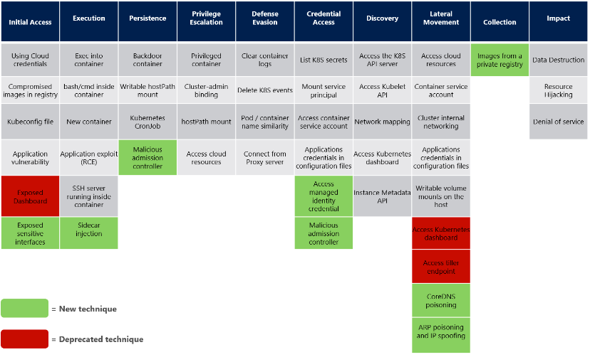

专题 云原生 标签 Kubernetes集群安全 首发于创新研究院官方博客
在2022年RSA大会上，来自CyberArk的高级安全研究员 Eviatar Gerzi为我们分享了Kubernetes集群的攻击面和防御策略以及如何利用两款开源工具（Kubesploit和KubiScan）对集群环境进行攻击和防御。本文试图以Gerzi的思路为依据，从攻击和防御的角度来简单聊一聊Kubernetes集群安全。
- 简介
- Kubernetes简介
Kubernetes是一个可移植、可扩展的开源平台，用于管理容器化工作负载和服务[[1]]。据stackshare的报道显示，已经有超过3000家公司在使用Kubernetes，其中不乏知名的头部企业[[2]]，毫无疑问Kubernetes是最受欢迎的容器管理平台之一。
- Kubesploit简介
Kubesploit是一款针对容器化环境的模拟真实攻击的跨平台开源工具，旨在为 PT 团队和红队人员在容器化环境攻击期间提供帮助。
- 架构说明
该工具基于merlin项目并集成yaegi项目实现。Merlin具有良好的C&C 和代理基础设施，满足了图1-1中的Center到Agent的架构需求，而其多样化的代理流量加密技术则保证了代码远程投送的安全性。Yaegi则是一个go语音解释器，用于解决远程投递的go语言代码在Agent端执行问题。
图1-1 远程代码执行示意图
- 功能场景介绍
截止目前，如图1-2，Kubesploit 项目已公布支持功能场景有15个[3]。
图1-2 Kubesploit 攻击模块
- KubiScan简介
KubiScan是一款基于角色访问控制 (RBAC) 授权模型的Kubernetes 集群扫描工具。该工具旨在自动化收集有关风险角色\集群角色、角色绑定\集群绑定、用户和 pod 的信息，帮助集群管理员识别攻击者可能利用来破坏集群的权限，降低集群风险[4]。
图1-3 KubiScan功能特性
该工具支持以下两种方式运行：
-
在集群主机上以容器方式运行
-
在主节点或者远程主机上使用python3运行
由于KubiScan某些功能需要特权服务账号，可以使用kube/config或者使用相应权限的服务账号令牌来解决。
- Kubernetes集群安全
根据IDC预测，国内市场到2025年容器基础架构软件的市场规模将达10亿美元，容器市场规模的增长，必将面临容器管理的难题，而Kubernetes是个不错的选择。 Kubernetes集群安全也将面临更严峻的考验，只要有一个Kubernetes自身或者其他容器架构的一个可利用途径被证实也必将对市场安全带来较大的影响。
图2-1 中国软件市场预测
- 站在攻击的角度看Kubernetes集群安全
从攻击链路来（见图2-2）[[5]]讲，集群安全可以分为两部分去看：一是集群组件，二是集群中运行的程序。这并不意味着集群组件和运行程序是相互独立的，相反，任何一方面的可利用点，都将是攻击者获取全部资源的有利抓手。如果攻击者通过前期手段控制了一个运行业务的容器，那么攻击者就可以通过该容器逃逸到容器所在的节点。如果控制了某个node节点，就可以控制该节点的上的pod，或者利用cve漏洞间接获取主节点权限。如果攻击者通过内部提权或者外部接口控制了主节点权限，那集群的几乎所有信息将会被轻易获取和接管。另外需要补充的是如etcd类的组件也需要关注，一旦控制了etcd，便可以间接获取整个集群。
图2-2云原生攻击链路
从威胁矩阵来看，我们不妨沿用微软发布的Kubernetes威胁矩阵[[6]]（如图2-3），对Kubernetes集群的攻击主要有10种手段：初始访问、执行、持久化、权限提升、防御绕过、凭证获取、资源发现、横向移动、数据收集、施加影响。这是微软更新的第二个矩阵版本，该矩阵调整了 MITRE ATT&CK® 框架的结构，几乎成为了描述面向集群的安全威胁的行业标准。随着 Kubernetes 的发展，一些已知的威胁被修复，故这部分矩阵上的技术被淘汰，新技术的应用也引入了新的威胁，这些威胁被加入了新版本的威胁矩阵。接下来我们就具体的矩阵策略聊一聊集群攻击。

图2-3 Kubernetes攻击矩阵
- 初始访问
该攻击方式下攻击者主要通过一些攻击技术来获取集群资源的访问权限，包括直接通过集群管理层获取或者间接通过集群内的承载业务对访问权限进行获取。如通过泄露的云账号信息、镜像仓库投毒等方式注入恶意镜像、泄露的Kubeconfig文件、易攻击的应用程序、暴露的敏感接口等。
- 执行
攻击者主要采用各种手段去达到能在集群内执行命令的效果。如果你已经拥有exec执行权限，那么你可以轻易的执行命令去渗透到容器内，达到后门、提权等一系列的目的。主要手段如：创建新的容器或注入者边车容器、利用代码执行漏洞的应用程序、远程ssh访问容器等。
- 持久化
当攻击者拿下一定的集群权限后，对权限做固化是一个必须的选项。这时候可以利用Kubernetes 控制器在集群中运长期运行后门容器或者定时执行定时任务，在容器内建立持久性，如果有权限挂载hostPath，那么也可以对节点主机持久化。 另一个新思路是通过准入控制器webhook，拦截请求获取口令信息，达到目的，相比于侵入式的方式，这个方式似乎更加一劳永逸，但也要考虑口令的变动，在具体场景中组合使用可能会更加合适。
- 权限提升
攻击过程中获取的权限和资源往往是有限的，这个时候，利用现有资源获取更多权限是下一步必须需要实施的。如通过特权容器可以获取到主机上的大部分资源。除此之外，通过RBAC（角色访问控制）创建或者绑定高权限的角色、通过宿主机挂载逃逸到节点主机等也是攻击者进行权限提升的常见手段。
- 防御绕过
该攻击方式主要指攻击者通过一些技术去隐藏其攻击动作从而避免被检测到。我们不妨从检测的几个维度去思考，常见的检测一般基于：日志（包括系统和应用）、事件（大部分是平台如Kubernetes事件）、资源名称（容器、pod、服务等）、资源基线（如镜像基线等），那么对这些检测数据的源头进行清除和伪装将是很好的防御绕过手段。另外对攻击者自身行为和身份的隐藏也是对溯源的一个有效的绕过。
- 凭证获取
该攻击方式主要包含通过一系列技术手段获取服务应用凭证。例如大部分的服务凭证将会被保存到Secret中，这时候在同域（如pod，namespace）下的应用将有权使用这些信息。如果能够直接取得节点管理权限，直接列出这些凭证也不是没有可能。值得注意的是，即使没有直接的节点管理权限，如果RBAC没有配置，那么以应用程序身份也可以直接通过API从Kubernetes获取凭证信息。
- 资源发现
当攻击者进入集群，首先需要搞清楚的是：这个集群都有些啥，然后才能继续开展后续的攻击活动。这里最直接的方式是访问各种API/Web界面获取，如Kubernetes API/Web UI、Kubelet API、元数据 API等。实际的环境中，该攻击方式往往还需要进一步的网络监控手段，如通过网络探测发现其他应用程序的资源，进而扫描其中包含的漏洞等。
- 横向移动
当发现了可用资源（如容器、pod、节点等）后，攻击者需要进一步对其他资源进行侦查，以掌握不同资源的给定可用权限，并利用已有权限渗透到这些资源，进行进一步的攻击。对资源进行侦察和渗透的大致思路包含了从边缘间接资源侦查（如云内的场景下通过hostPath挂载，利用单个容器访问权限获取到集群外云资源等）、集群资源的侦查（如通过凭证获取阶段RBAC策略未配置或配置不合理的场景获取资源，利用SA权限获得集群资源）、对主机资源的侦查（如创建可写的hostPath挂载容器）、DNS投毒（修改CoreDNS，获取其他服务的真实网络身份）、ARP/IP欺骗等。
- 数据收集
该攻击手段是21年微软矩阵版本中新增的，目前主要包含利用既有权限，从私有仓库拉取镜像。笔者推测该攻击手段是用于持久化，或用于在其他横向移动等攻击手段中新建容器，或用于镜像投毒等（需要考虑仓库的准入等机制）。
- 施加影响
该攻击手段主要是集群中的资源和活动，如数据破坏(包含集群组件和应用程序)、资源劫持（指利用集群资源进行其他任务活动，如挖矿等）。拒绝服务（通过恶意的资源占用如网络，使得正常活动无法运行或者运行受损）等技术。
- 站在防御的角度看Kubernetes集群安全
笔者始终认为专业的事交给专业的产品，Kubernetes集群防御主要还是应该依托防御安全产品（如绿盟的云原生安全平台），所以我们今天从环境加固方面去聊一聊安全防御。Gerzi在会议中分享了针对集群防御的最佳加固实践[[7]]，如图2-4所示，加固策略几乎覆盖了大部分攻击手段。接下来我们简要聊一聊加固策略的大致内容。
图2-4 集群加固的最佳实践
- Kubernetes集群安全配置
笔者理解该策略首先包含对Kubernetes API的访问控制。除此之外，使用RBAC和命名空间限制对集群资源的访问、使用网络策略限制集群内部流量（如pod间流量）、使用TLS进行组件间通信和etcd加密，以及合理的限制集群上资源的使用（包括pod级自身资源限制、文件挂载的只读等限制等）都会在一定程度上减少由于集群本身因素的攻击。
- 遵循安全策略
传统的一些安全设计理念和安全策略在云安全中依然有效。由于漏洞被暴出后，厂商往往会第一时间对其进行规避和修复，故保持组件最新状态是应对已知漏洞攻击的最简单有效的方式。此外，遵循最小化原则，使用最小的系统资源与权限、为集群service配置最小IAM权限角色也能有效缩小威胁面。最后，使用私有IP防止集群资产暴露到互联网、配置审计日志记录访问踪迹(如Kubernetes API 审计、流式传输日志和审核 ）、确保组件应用或执行文件以及镜像的安全性等加固策略，也是保证集群环境安全的有效措施。
- 微服务自身安全
这是一个相对发散的安全面，由于集群业务各不相同，微服务提供的功能接口千变万化，这里我们只讨论以集群配置的手段去削弱微服务侧带给整个集群的影响。主要的加固策略包括：设置pod安全策略使得pod间强制隔离、将集群敏感信息最小挂载、配置低可信度的容器到指定的强制隔离节点运行、使用服务网格加密通信等。
- 使用Kubesploit对Kubernetes集群进行模拟攻击
Kubesploit也遵从Kubernetes威胁矩阵并建立了其功能特性对威胁矩阵的映射，由图2-5可知，虽然单个攻击方式的手段覆盖率不是很高，但基本上90%的攻击方式已经得到覆盖。
图2-5 Kubesploit MITRE地图
会议上，Gerzi就如何使用Kubesploit对Kubernetes集群进行攻击进行了演示，Kubesploit的项目说明里也有一个动态图片说明了一个完整的模拟攻击过程。演示环境中，其Agent安装在docker容器内，从agent安装到向server（center）注册，仅需要几秒钟就可以建立链接。

图2-6 Kubesploit 攻击示例
Server端对成功注册的Agent具有完全的管理能力，可以在Server上选择对应的攻击向量在指定的Agent上执行，并将结果和过程日志回显到server端，这对红蓝对抗活动里苦于缺少容器环境攻击工具的小伙伴来说无疑是个很好的消息。
图2-7 Kubesploit 攻击信息回显
- 使用KubiScan对Kubernetes集群进行扫描
KubiScan大家可能并不 陌生，因为Gerzi在2020年的rsac上就分享这款款开源工具。该工具主要根据风险管理配置文件risky_roles.yaml对风险角色的优先级进行维护，从而识别有风险RBAC配置。
执行KubiScan并携带指定的功能参数，工具就会自动对环境集群配置进行扫描，并将有风险的配置进行展示，根据扫描结果显示的风险详情，安全管理员可以针对特定的配置进行加固配置，以达到防御效果。
图2-8 KubiScan扫描信息展示
- 总结
Gerzi通过两款开源工具演示了对Kubernetes集群的攻击和防御思路，本文特意从集群的攻击面和加固知识点进行的简单的解读，由于涉及安全技术面太过宽泛，笔者无法在文中深入介绍，只能抛出来作为一个引子，希望能让我们对集群安全的轮廓有个大致了解。除此之外，笔者还想说的是Kubesploit工具。据Gerzi讲述他们开发该工具是希望通过真实性的攻击去检测集群环境是否安全，以及安全防御软件是否生效。但从笔者了解到的信息来看，仅目前的Kubesploit工具来讲，则更像是一个Kubernetes集群攻击套件向BAS演变的中间能力。笔者认为该工具最终会集合这两款工具的能力（扫描发现+真实模拟攻击），向着通过智能化+场景编排化的手段，去验证集群环境和安全防御能力的方向发展。
参考文献
[1] [] https://kubernetes.io/docs/concepts/overview/
[2] [] https://stackshare.io/kubernetes
[3] https://github.com/cyberark/kubesploit
[4] https://github.com/cyberark/KubiScan
[5] [] 云原生背景下的应用安全建设
[7] [] Attacking and Defending Kubernetes Cluster: Kubesploit vs KubiScan